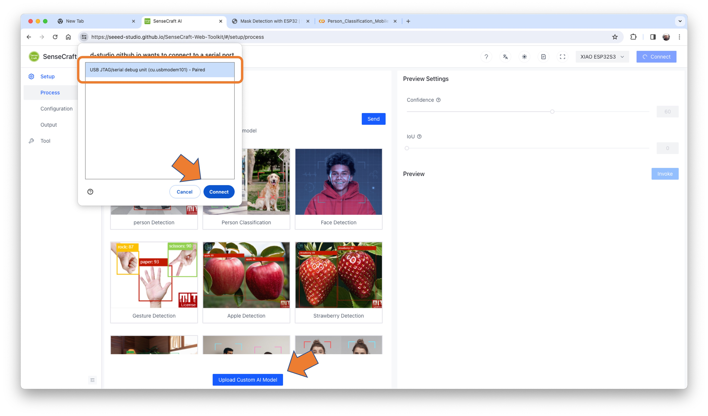
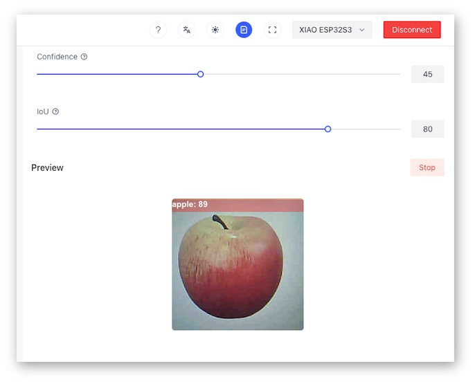

Classificazione delle Immagini
Introduzione
Sempre di più, ci troviamo di fronte a una rivoluzione dell’intelligenza artificiale (IA) in cui, come affermato da Gartner, Edge AI ha un potenziale di impatto molto elevato, ed è ora!

In prima linea nel Radar delle Tecnologie Emergenti c’è il linguaggio universale di Edge Computer Vision. Quando esaminiamo il Machine Learning (ML) applicato alla visione, il primo concetto che ci accoglie è la classificazione delle immagini, una specie “Hello World” del ML che è sia semplice che profondo!
Seeed Studio XIAO ESP32S3 Sense è un potente strumento che combina il supporto per fotocamera e scheda SD. Con la sua potenza di elaborazione ML embedded e la capacità di fotografia, è un ottimo punto di partenza per esplorare l’intelligenza artificiale per la visione TinyML.
Un progetto TinyML di Motion Classification: Frutta contro Verdura
L’idea di base del nostro progetto sarà quella di addestrare un modello e procedere con l’inferenza su XIAO ESP32S3 Sense. Per l’addestramento, dovremmo trovare alcuni dati (in effetti, tonnellate di dati!).
Ma prima di tutto, abbiamo bisogno di un obiettivo! Cosa vogliamo classificare?
Con TinyML, un set di tecniche associate all’inferenza di apprendimento automatico su dispositivi embedded, dovremmo limitare la classificazione a tre o quattro categorie a causa di limitazioni (principalmente della memoria). Differenziamo mele da banane e patate (si possono provare altre categorie).
Quindi, cerchiamo un set di dati specifico che includa immagini da quelle categorie. Kaggle è un buon inizio:
https://www.kaggle.com/kritikseth/fruit-and-vegetable-image-recognition
Questo set di dati contiene immagini dei seguenti alimenti:
- Frutta - banana, mela, pera, uva, arancia, kiwi, anguria, melograno, ananas, mango.
- Verdura - cetriolo, carota, peperone, cipolla, patata, limone, pomodoro, ravanello, barbabietola, cavolo, lattuga, spinaci, soia, cavolfiore, peperone, peperoncino, rapa, mais, mais dolce, patata dolce, paprika, jalepeño, zenzero, aglio, piselli, melanzane.
Ogni categoria è suddivisa in train [addestramento] (100 immagini), test (10 immagini) e validation (10 immagini).
- Scaricare il dataset dal sito Web di Kaggle e metterlo sul computer.
Facoltativamente, si possono aggiungere alcune foto fresche di banane, mele e patate direttamente dalla cucina di casa, utilizzando, ad esempio, il codice discusso nel lab della configurazione.
Addestramento del modello con Edge Impulse Studio
Utilizzeremo Edge Impulse Studio per addestrare il modello. Come si saprà, Edge Impulse è una piattaforma di sviluppo leader per l’apprendimento automatico su dispositivi edge.
Inserire le credenziali del proprio account (o crearne uno gratuito) su Edge Impulse. Quindi, creare un nuovo progetto:

Raccolta Dati
Successivamente, nella sezione UPLOAD DATA, caricare dal computer i file delle categorie scelte:

Sarebbe meglio se ora si avesse il proprio set di dati di training suddiviso in tre classi di dati:

Si possono caricare dati extra per ulteriori test del modello o dividere i dati di training. Lo lasceremo così com’è per utilizzare più dati possibili.
Impulse Design
Un impulso prende dati grezzi (in questo caso, immagini), estrae feature (ridimensiona le immagini) e poi utilizza un blocco di apprendimento per classificare nuovi dati.
La classificazione delle immagini è l’uso più comune del deep learning, ma per portare a termine questo compito dovrebbero essere utilizzati molti dati. Abbiamo circa 90 immagini per ogni categoria. Questo numero è sufficiente? No, per niente! Avremo bisogno di migliaia di immagini per “insegnare o modellare” per distinguere una mela da una banana. Ma possiamo risolvere questo problema riaddestrando un modello precedentemente addestrato con migliaia di immagini. Chiamiamo questa tecnica “Transfer Learning” (TL).

Col TL, possiamo mettere a punto un modello di classificazione delle immagini pre-addestrato sui nostri dati, che funziona bene anche con set di dati di immagini relativamente piccoli (il nostro caso).
Quindi, partendo dalle immagini grezze, le ridimensioneremo (96x96) pixel e le invieremo al nostro blocco Transfer Learning:

Pre-elaborazione (Generazione di Feature)
Oltre a ridimensionare le immagini, possiamo cambiarle in scala di grigi o mantenere la profondità di colore RGB effettiva. Iniziamo selezionando Grayscale. In questo modo, ognuno dei nostri campioni di dati avrà dimensione 9.216 feature (96x96x1). Con RGB, questa dimensione sarebbe tre volte più grande. Lavorare con la scala di grigi aiuta a ridurre la quantità di memoria finale necessaria per l’inferenza.

Ricordarsi di [Save parameters]. Questo genererà le feature da utilizzare nel training.
Progettazione del Modello
Transfer Learning
Nel 2007, Google ha introdotto MobileNetV1, una famiglia di reti neurali di visione artificiale di uso generale progettate pensando ai dispositivi mobili per supportare classificazione, rilevamento e altro. Le MobileNet sono modelli piccoli, a bassa latenza e a basso consumo, parametrizzati per soddisfare i vincoli di risorse di vari casi d’uso.
Sebbene l’architettura di base di MobileNet sia già minuscola e abbia una bassa latenza, spesso un caso d’uso o un’applicazione specifica potrebbe richiedere che il modello sia più piccolo e veloce. MobileNet introduce un parametro semplice α (alfa) chiamato moltiplicatore di larghezza per costruire questi modelli più piccoli e meno costosi dal punto di vista computazionale. Il ruolo del moltiplicatore di larghezza α è di assottigliare una rete in modo uniforme a ogni livello.
Edge Impulse Studio ha MobileNet V1 (immagini 96x96) e V2 (immagini 96x96 e 160x160) disponibili, con diversi valori α (da 0,05 a 1,0). Ad esempio, si otterrà la massima accuratezza con V2, immagini 160x160 e α=1,0. Naturalmente, c’è un compromesso. Maggiore è la precisione, maggiore sarà la memoria (circa 1,3 M di RAM e 2,6 M di ROM) necessaria per eseguire il modello, il che implica una maggiore latenza.
L’ingombro più piccolo sarà ottenuto all’altro estremo con MobileNet V1 e α=0,10 (circa 53,2 K di RAM e 101 K di ROM).
Per questo primo passaggio, utilizzeremo MobileNet V1 e α=0,10.
Training
Data Augmentation
Un’altra tecnica necessaria da usare con il deep learning è il data augmentation. Il data augmentation è un metodo che può aiutare a migliorare l’accuratezza dei modelli di machine learning, creando dati artificiali aggiuntivi. Un sistema di Data Augmentation apporta piccole modifiche casuali ai dati di training (ad esempio capovolgendo, ritagliando o ruotando le immagini).
Sotto, qui si può vedere come Edge Impulse implementa una policy di data Augmentation sui dati:
# Implements the data augmentation policy
def augment_image(image, label):
# Flips the image randomly
image = tf.image.random_flip_left_right(image)
# Increase the image size, then randomly crop it down to
# the original dimensions
resize_factor = random.uniform(1, 1.2)
new_height = math.floor(resize_factor * INPUT_SHAPE[0])
new_width = math.floor(resize_factor * INPUT_SHAPE[1])
image = tf.image.resize_with_crop_or_pad(image, new_height, new_width)
image = tf.image.random_crop(image, size=INPUT_SHAPE)
# Vary the brightness of the image
image = tf.image.random_brightness(image, max_delta=0.2)
return image, labelL’esposizione a queste variazioni durante l’addestramento può aiutare a impedire al modello di prendere scorciatoie “memorizzando” indizi superficiali nei dati di addestramento, il che significa che potrebbe riflettere meglio i pattern profondi in esame nel set di dati.
L’ultimo layer del nostro modello avrà 16 neuroni con un dropout del 10% per prevenire l’overfitting. Ecco l’output del Training:
Il risultato potrebbe essere migliore. Il modello ha raggiunto circa il 77% di accuratezza, ma la quantità di RAM prevista per essere utilizzata durante l’inferenza è relativamente piccola (circa 60 KByte), il che è molto buono.
Deployment
Il modello addestrato verrà distribuito come libreria Arduino .zip:
Apri l’IDE Arduino e in Sketch, si va su Include Library e add.ZIP Library. Selezionare il file che scaricato da Edge Impulse Studio e il gioco è fatto!
Nella scheda Examples su Arduino IDE, si trova un codice sketch sotto il nome del proprio progetto.
Aprire l’esempio Static Buffer:
La prima riga di codice è esattamente la chiamata di una libreria con tutto il necessario per eseguire l’inferenza sul dispositivo.
#include <XIAO-ESP32S3-CAM-Fruits-vs-Veggies_inferencing.h>Ovviamente, questo è un codice generico (un “template”) che ottiene solo un campione di dati grezzi (memorizzati nella variabile: features = {} ed esegue il classificatore, eseguendo l’inferenza. Il risultato viene mostrato sul monitor seriale.
Dovremmo ottenere il campione (immagine) dalla fotocamera e pre-elaborarlo (ridimensionandolo a 96x96, convertendolo in scala di grigi e appiattendolo). Questo sarà il tensore di input del nostro modello. Il tensore di output sarà un vettore con tre valori (etichette), che mostrano le probabilità di ciascuna delle classi.
Tornando al progetto (Tab Image), copiare uno dei Raw Data Sample:
9.216 feature verranno copiate negli appunti. Questo è il tensore di input (un’immagine appiattita di 96x96x1), in questo caso, banane. “Incollare” questo tensore di input su features[] = {0xb2d77b, 0xb5d687, 0xd8e8c0, 0xeaecba, 0xc2cf67, ...}
Edge Impulse ha incluso la libreria ESP NN nel suo SDK, che contiene funzioni NN (Neural Network) ottimizzate per vari chip Espressif, tra cui ESP32S3 (in esecuzione su Arduino IDE).
Quando si esegue l’inferenza, si deve ottenere il punteggio più alto per “banana”.
Ottime notizie! Il nostro dispositivo gestisce un’inferenza, scoprendo che l’immagine in ingresso è una banana. Notare inoltre che il tempo di inferenza è stato di circa 317 ms, con un massimo di 3 fps se si è provato a classificare le immagini da un video.
Ora, dovremmo incorporare la telecamera e classificare le immagini in tempo reale.
Si va su Arduino IDE Examples e si scarica dal progetto lo sketch esp32_camera:

Si devono cambiare le righe dalla 32 alla 75, che definiscono il modello e i pin della telecamera, utilizzando i dati relativi al nostro modello. Copiare e incollare le righe seguenti, sostituendo le righe 32-75:
#define PWDN_GPIO_NUM -1
#define RESET_GPIO_NUM -1
#define XCLK_GPIO_NUM 10
#define SIOD_GPIO_NUM 40
#define SIOC_GPIO_NUM 39
#define Y9_GPIO_NUM 48
#define Y8_GPIO_NUM 11
#define Y7_GPIO_NUM 12
#define Y6_GPIO_NUM 14
#define Y5_GPIO_NUM 16
#define Y4_GPIO_NUM 18
#define Y3_GPIO_NUM 17
#define Y2_GPIO_NUM 15
#define VSYNC_GPIO_NUM 38
#define HREF_GPIO_NUM 47
#define PCLK_GPIO_NUM 13Ecco il codice risultante:
Lo sketch modificato è scaricabile da GitHub: xiao_esp32s3_camera.
Notare che si possono facoltativamente mantenere i pin come file .h come abbiamo fatto nel Setup Lab.
Caricare il codice sullo XIAO ESP32S3 Sense e si sarà pronti per iniziare a classificare la frutta e la verdura! Si può controllare il risultato su Serial Monitor.
Test del modello (inferenza)

Scattando una foto con la fotocamera, il risultato della classificazione apparirà su Serial Monitor:

Altri test:
Test con un Modello Più Grande
Ora, passiamo all’altro lato delle dimensioni del modello. Selezioniamo un MobilinetV2 96x96 0.35, con immagini RGB in input.
Anche con un modello più grande, la precisione potrebbe essere migliore e la quantità di memoria necessaria per eseguire il modello aumenta di cinque volte, con una latenza che aumenta di sette volte.
Notare che le prestazioni qui sono stimate con un dispositivo più piccolo, l’ESP-EYE. L’inferenza effettiva con l’ESP32S3 dovrebbe essere migliore.
Per migliorare il nostro modello, dovremo addestrare più immagini.
Anche se il nostro modello non ha migliorato la precisione, testiamo se l’XIAO può gestire un modello così grande. Faremo un semplice test di inferenza con lo sketch Static Buffer.
Ridistribuiamo il modello. Se il compilatore EON è abilitato quando si genera la libreria, la memoria totale necessaria per l’inferenza dovrebbe essere ridotta, ma ciò non influisce sulla precisione.
⚠️ Attenzione - Xiao ESP32S3 con PSRAM abilitata ha memoria sufficiente per eseguire l’inferenza, anche in un modello così grande. Mantenere il Compilatore EON NOT ENABLED.
Facendo un’inferenza con MobilinetV2 96x96 0.35, con immagini RGB in input, la latenza è stata di 219 ms, il che è ottimo per un modello così grande.
Per il test, possiamo addestrare di nuovo il modello, usando la versione più piccola di MobileNet V2, con un alpha di 0,05. È interessante che il risultato in accuratezza sia stato più alto.

Notare che la latenza stimata per un Arduino Portenta (o Nicla), in esecuzione con un clock di 480 MHz è di 45 ms.
Distribuendo il modello, abbiamo ottenuto un’inferenza di soli 135 ms, ricordando che XIAO funziona con metà del clock utilizzato da Portenta/Nicla (240 MHz):

Esecuzione dell’inferenza su SenseCraft-Web-Toolkit
Una limitazione significativa della visualizzazione dell’inferenza su Arduino IDE è che non possiamo vedere su cosa punta la telecamera. Una buona alternativa è SenseCraft-Web-Toolkit, uno strumento di distribuzione del modello visivo fornito da SSCMA(Seeed SenseCraft Model Assistant). Questo strumento consente di distribuire facilmente modelli su varie piattaforme tramite semplici operazioni. Lo strumento offre un’interfaccia intuitiva e non richiede alcuna codifica.
Seguire i seguenti passaggi per avviare SenseCraft-Web-Toolkit:
- Aprire il sito web di SenseCraft-Web-Toolkit.
- Collega XIAO al computer:
- Dopo aver collegato XIAO, selezionarlo come di seguito:

Selezionare il dispositivo/Porta e premere
[Connect]:
Si possono provare diversi modelli di Computer Vision caricati in precedenza da Seeed Studio. Da provare e verificarli!
Nel nostro caso, useremo il pulsante blu in fondo alla pagina: [Upload Custom AI Model].
Ma prima, dobbiamo scaricare da Edge Impulse Studio il modello quantized.tflite.
- Si va sul proprio progetto su Edge Impulse Studio, oppure si clona questo:
- Nella
Dashboard, scaricare il modello (“block output”):Transfer learning model - TensorFlow Lite (int8 quantized).
- Su SenseCraft-Web-Toolkit, usare il pulsante blu in fondo alla pagina:
[Upload Custom AI Model]. Si aprirà una finestra. Inserire il file del Modello scaricato sul computer da Edge Impulse Studio, scegliere un nome del modello e inserirlo con le etichette (ID: Object):

Notare che si devono usare le etichette addestrate su EI Studio, inserendole in ordine alfabetico (nel nostro caso: apple, banana, potato).
Dopo alcuni secondi (o minuti), il modello verrà caricato sul dispositivo e l’immagine della telecamera apparirà in tempo reale nel Preview Sector:

Il risultato della classificazione sarà in cima all’immagine. Si può anche selezionare la “Confidence” del cursore di inferenza Confidence.
Cliccando sul pulsante in alto (Device Log), si può aprire un Serial Monitor per seguire l’inferenza, come fatto con l’IDE Arduino:

Su Device Log, si otterranno informazioni come:
- Tempo di pre-elaborazione (cattura immagine e Crop): 4ms,
- Tempo di inferenza (latenza modello): 106ms,
- Tempo di Post-elaborazione (visualizzazione dell’immagine e inclusione dei dati): 0ms,
- Tensore di output (classi), ad esempio: [[89,0]]; dove 0 è Apple (1 è banana e 2 è patata).
Ecco altri screenshot:

Conclusione
XIAO ESP32S3 Sense è molto flessibile, poco costoso e facile da programmare. Il progetto dimostra il potenziale di TinyML. La memoria non è un problema; il dispositivo può gestire molte attività di post-elaborazione, tra cui la comunicazione.
L’ultima versione del codice si trova nel repository GitHub: XIAO-ESP32S3-Sense.